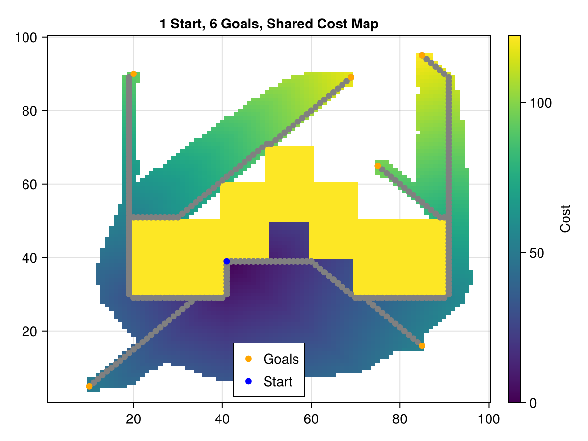
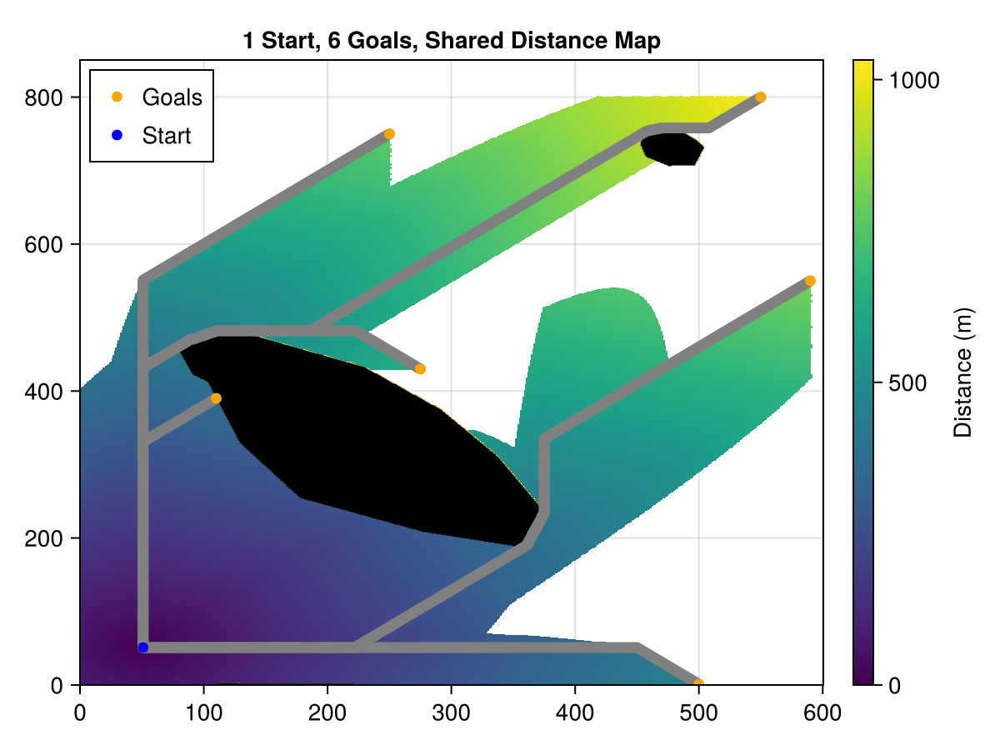
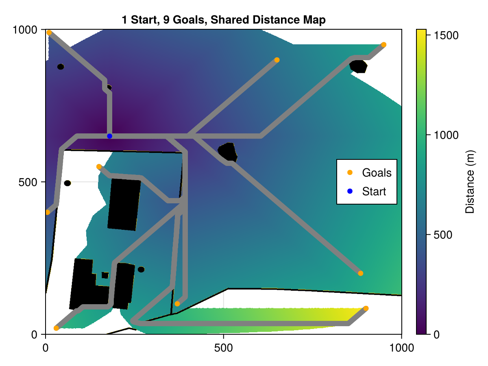

AStarGridSearch
Quick Intro
This package contains types and methods for searching for paths on a 2D grid using the A* algorithm. Its main use is to get the path cost (distance), but it can return the full path as well. The PathCost type is set up in such a way that it can be used as a cost function for optimization routines. A PathCost is created for a set start cell; searches for multiple goal cells can be performed while keeping the same cost map between them. This means distances to intermediate cells don't need to be re-computed each time.
Following is a quick example of the main functionality of this package.
julia> using AStarGridSearchjulia> occupancy = zeros(Bool, 10, 10); # open areajulia> obstacle = CartesianIndex.([ tuple.(2, 3:5)..., tuple.(3, 3:5)..., tuple.(4, 4:6)..., tuple.(5, 5:7)..., tuple.(6, 4:6)..., tuple.(7, 3:5)..., tuple.(8, 3:5)..., ]);julia> occupancy[obstacle] .= 1;julia> occupancy # shown with obstacle10×10 Matrix{Bool}: 0 0 0 0 0 0 0 0 0 0 0 0 1 1 1 0 0 0 0 0 0 0 1 1 1 0 0 0 0 0 0 0 0 1 1 1 0 0 0 0 0 0 0 0 1 1 1 0 0 0 0 0 0 1 1 1 0 0 0 0 0 0 1 1 1 0 0 0 0 0 0 0 1 1 1 0 0 0 0 0 0 0 0 0 0 0 0 0 0 0 0 0 0 0 0 0 0 0 0 0julia> start = CartesianIndex(4, 3);julia> resolution = (1, 1);julia> pathCost = PathCost(start, occupancy, resolution); # construct search objectjulia> goal = CartesianIndex(7, 9);julia> pathCost(goal) # calculate distance to goal; must be called before other methods12.656854249492381julia> getPath(pathCost, goal) # full path from start to goal if it exists12-element Vector{CartesianIndex{2}}: CartesianIndex(4, 3) CartesianIndex(5, 3) CartesianIndex(6, 3) CartesianIndex(7, 2) CartesianIndex(8, 2) CartesianIndex(9, 3) CartesianIndex(9, 4) CartesianIndex(9, 5) CartesianIndex(9, 6) CartesianIndex(9, 7) CartesianIndex(8, 8) CartesianIndex(7, 9)julia> finalOrientation(pathCost, goal) # angle in radians between the last two cells2.356194490192345julia> pathCost(goal) # returns saved value, no new computations12.656854249492381julia> pathCost(CartesianIndex(4, 9)) # run with new goal; computes quicker due to saved costs11.071067811865476
Here are examples of the resulting paths and cost maps from the algorithm. The code that generated these can be found in the scripts directory of the repo:



Further Info
See below for further details on each type and method.
AStarGridSearch.PathCostAStarGridSearch.PathCostAStarGridSearch.PathCostAStarGridSearch.finalOrientationAStarGridSearch.getPathAStarGridSearch.previousStepAStarGridSearch.weightedEuclidian
AStarGridSearch.PathCost — TypeStruct for PathCost function data. Previous computations are kept track of in its data. Can be used multiple times for the same start cell, saving computation.
The cells of the costMatrix contain the distance to them from the start cell. NaN is a placeholder meaning no path has been calculated to that cell yet. Inf means that cell is not reachable from the start cell.
Fields:
start::AnycostMatrix::Anyresolution::Anydiffs::Anydist::Anyheuristic::Anyfrontier::Any
AStarGridSearch.PathCost — MethodPathCost(
start,
occupancy,
resolution;
diagonals,
dist,
heuristic
) -> PathCost
The constructor initializes the path search algorithm, created for each new start cell.
Inputs:
start: the starting cell in the matrixoccupancy: a matrix indicating which cells are occupiedresolution: a vector of the width and height of each celldiagonals: whether to include connectivity to diagonal cells or not (default true)dist: function to compute distance from current to next cell (default weightedEuclidian)heuristic: function to compute estimated distance from current to goal cell (default weightedEuclidian)
Note: this type and associated methods (except for finalOrientation) can in fact be used with any N-dimensional cost array, not just a matrix.
The parameters dist and heuristic can be passed any functions to compute distances as long as they take as input a current cell, a goal cell, and a cell resolution.
AStarGridSearch.PathCost — MethodSearch for a path to a desired goal cell using the A* algorithm.
Returns the path cost, which will be Inf if it is unreachable.
If the cells of the path are desired, use the getPath function.
AStarGridSearch.finalOrientation — MethodfinalOrientation(S::PathCost, goal) -> Any
Given a PathCost and a goal point, this function returns the angle in radians of the direction from penultimate cell to goal cell, effectively the direction at the end of the path to the goal.
AStarGridSearch.getPath — MethodgetPath(S::PathCost, goal) -> Vector
Given a PathCost and a goal point, this function returns the entire list of cells from the start to the goal. Only useful to be called after the PathCost object is called with the goal cell.
AStarGridSearch.previousStep — MethodpreviousStep(current, costMatrix) -> Any
A function used internally to find what the previous step was in order to arrive at the current cell in the cost matrix.
AStarGridSearch.weightedEuclidian — MethodweightedEuclidian(x1, x2, weights) -> Any
A function to calculate the euclidean distance between two cells based on a weighting along each dimension. In mathematical terms:
\[\left\lVert w \circ (x_2 - x_1) \right\rVert_2\]
where $x_1$ and $x_2$ are the cells, $w$ is the dimension weights, and $\circ$ is a Hadamard or element-wise product.